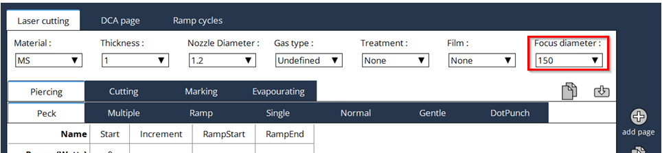
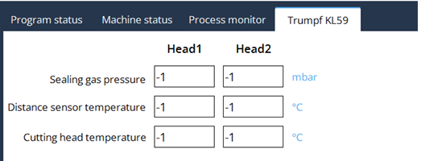
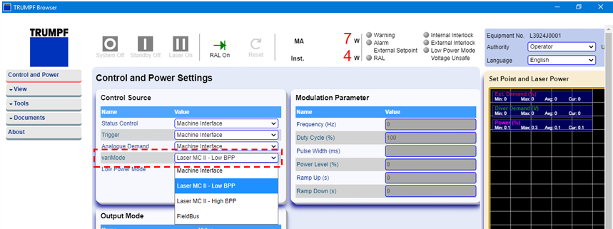
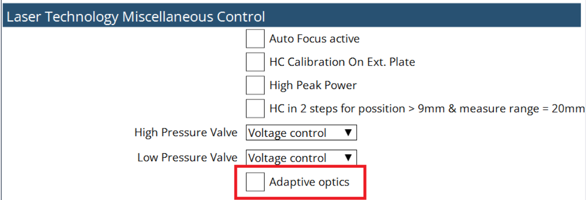

Specialized Laser funcitions
Support of Trumpf KL59 optics
Vulcan supports the Trumpf KL59 optics. The Trumpf KL59 optics are a set of laser cutting optics that are designed to provide high-quality cutting performance for a variety of materials.
-
support of 2 focus length

-
support of integrated temperature sensors and sealing gas pressure monitoring
A advanced temperure monitoring system for the Trumpf KL59 cutting head is available. The system is able to monitor the temperature of the cutting head and the sealing gas pressure to avoid damage to the cutting unit.

-
support of service functions Service functions
TRUMPF Varimode
Vulcan supports the Varimode of Trumpf lasers. TRUMPF Varimode is a feature of TRUMPF lasers that allows for dynamic adjustment of the laser beam’s mode. This capability enables the laser to switch between different beam profiles, optimizing the laser’s performance for various cutting and welding applications. By adjusting the beam mode, the laser can achieve better quality cuts, increased processing speeds, and improved overall efficiency.

Adaptive Optics
Adaptive optics option is used for adjusting the Focal distance using the special mirror. the focal distance is controlled by the Air pressure which makes the mirror concave and convex based on the pressure.
A look-up table is generated based on the Radius of Curvature (ROC) vs Focus distance
The function is activated in the technology tables
